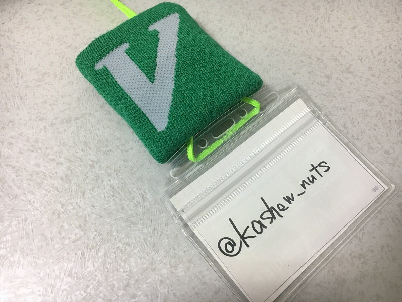
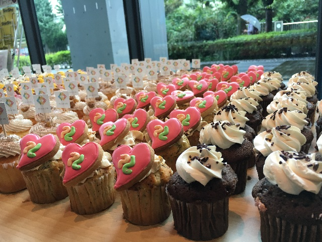

Sphinx+翻訳 Hack-a-thon 2017.3に参加しました #sphinxjp¶
ここ数年で最多の人数だったようです。自分も3年4カ月ぶりくらいの参加らしいです。
当日のイベントページ
やったこと¶
BitBucket.orgでホスティングしてたBlogをGitHub.ioに移行
Blogの細々としたUpdate作業
BitBucket.org→GitHub.ioに移行¶
いつの間にか bitbucket.org ではなく、 bitbucket.io に移行してました。 そのため既存のhogehoge.bitbucket.orgのリンクを踏むと、 bitbucket.orgのトップページにリダイレクトされるようになってしまいました。(悲しい……)
そこでBlogの全部のリンクを直すくらいならいっそのことGitHubに移行してしまおうと思い立ち、 この機会に全て移行しました。
具体的にした作業としては以下になります。
.nojekyllファイルの作成(空ファイル)
URLがbitbuketになっているものをgithubに変更する。
RSS対応(feedburner)
google analytics対応
単純作業なので面倒でしたが、 Documentation — Tinkerer を見ながら行けば普通にいけますね。
注意点としては.nojekyllファイルを作成し忘れないようにすることですね。 .nojekyllファイルがないとGitHubはTinkererでなくJekillを実行してしまい、 _staticのようにアンダースコアで始まるファイルやフォルダを無視してしまいます。
(2017/03/20追記)
https://twitter.com/shimizukawa/status/843130656204836864
Sphinx1.4の頃から、conf.pyのextensionsにsphinx.ext.githubpagesを追加するだけで済むようになっていたようです。清水川せんせーご指導いただきありがとうございます！
Blogの細々としたUpdate作業¶
GitHubには移行できたので、前々から気にはなっていたのですが放置してしまっていた点を対応しました。
リンク先変更(about.meなど)
検索システムをJanomeに変更→日本語検索もいい感じに！
レイアウト整える。(画像の比率や反転など)
CSSの調整
“image”ディレクティブでscaleオプションの使い方に一部誤りがあったので修正
元画像に不備があるものが混じっていたので修正
おかげでスマホでBlogを閲覧時に出ていた不備が改善できました。
成果発表¶
@usaturn : Sphinxのissue対応。Sphinx本の改定作業(Sphinxのインストール方法について)
nskgch : Sphinx 1.6の翻訳
@jbking : Blogシステムをアップデートして日本語検索をJanomeに対応。ビルドシステム(gulp)の直し。
@kashew_nuts : 上記参照
@shimizukawa : Sphinx本の改定。文法マニュアル作成。
@tk0miya : Sphinxのバグを直してました。
@youske : 前回Sphinx-user.jpでmake.htmlでホームページのひな形を作ったので、 ドキュメントを強化(リストや罫線,強調,写真,etc)するためのあれこれを試してた。
@pashango : Qtを使ってSphinxのGUIツールを作ってた。
VimConf2016 に参加しました¶
ujihisa.vimを含めると3年ぶり3回目の参加となったVimConf2016。全部は書ききれないのでメモをとれたやつだけ書きます。
例年の傾向を見てると参加者Blogとかは公式の方にまとめられ、動画もYouTubeの vim-jp にまとめれるようなので後から振り返りたいかたはそちらをチェックされるとよろしいかと。
Introduction to Vim 8.0 by Ken Takata¶
Vim 8.0の新機能の紹介および、開発の軌跡について。また、日本人の活躍についても紹介
「vim-jpはあなたのコントリビューションをお待ちしております。」
いちばん楽しかったのは？(@ujm)→DirectX、常にONにしてる。後はspellチェックで日本語の検出を除外する機能。
Vim as the MAIN text editor by bird_nitryn¶
使い始めて1年ぐらい。VSCode→Vimに。Vimはすべてキーボードで操作が完結するのが魅力。
とにかくVimの機能を使いまくる→vimrcを育てる
慣れるために→Vimium導入, vimを触る時間を増やす。
vimrc: 116行→188行 neobundle→dein。色んな言語を触るようになったのでタブやステータスラインをいじったり。
突如始まったvimrc読書会が面白かった（笑）
具体的になぜVSCode→Vimに？
ホストPCがWindowsでvagrantでCentOS。node.jsのパッケージマネージャの制限でフォルダ共有してるとコケる。
それを叩くたびに味わっていた。共有やめたいCentOS上でいじりたい。
EmacsかVimか？→じゃあVimだということでVimに。
これだけは避けた方がいいプラクティスは？
宗教戦争はこだわりなので。vimrcをすごく書き込んでる人と育ててる段階の様々な人がいるので、自分と同じぐらいのレベル、自分が読んでわかりやすいレベルのものからやるといい。
転向してきてテンションが上がった機能、プラグインは？
VimFiler。カーソル移動ができる。Vimをいじってる人とすればすごく直観的だった。
Denite.nvim ~The next generation of unite~ by Shougo¶
テキストエディタとは何か？「生きる理由。」
deniteとは何か？unite.vimをフルスクラッチで書き直したもの。Python3で書かれていて、neovim/vim8.0+で動作。
なぜdenie.nvimを作ろうとした？→”unite.vim slow”
とくに遅いといわれていた、grepやfile_recが速くなる。候補のサジェストも。
unite grepでは数十秒→denite.nvimとcpsmで1,2秒に
unitne.vimがdenite.nvimのソースを持っているのでdenite.nvimはunite.vimを呼べる。
次はdeoplete.nvimをVim8.0+に対応予定。
他にneosnippet, vinarise, vimshell, vimfilerも対応予定。一番優先度が高いのはvimshell
if_python3の拡張、WindowIDの機能、etcの機能を安定して使うのにVim8.0+を選んだ。非同期機能はVim8.0で導入された機能ではなくPython3を使っている。
Shougo/denite.nvim: Dark powered asynchronous unite all interfaces for Neovim/Vim8
Go、C、Pythonのためのdeoplete.nvimのソースの紹介と、Neovim専用にpure Goでvim-goをスクラッチした話 by zchee¶
「deoplete.nvimのために初めてPythonを触ったのでみなさんもなんとかなります。」
deoplete.nvimメッチャ補完速い - 脱ネオコンして<C-n>, <C-p>や<C-x>補完で充分と思ってたけどあの速さは心が揺らぐ……
エディタの壁を越えるGoの開発ツールの文化と作成法 by tenntenn¶
「Golang使ってみたことある人どれぐらいいますか？」→結構いる。
vim歴>Golang歴。社内でvimmerは7人ぐらいであとはほとんどIntelliJ
GolangのおかげでWindowsでVim使うのが「より」便利になっている印象。(mattn/jvgrep, mattn/files, koron/netupvim, etc…)
vim-mode-plus for Atom editor by t9md¶
エディタ遍歴: Vim(Normal) → Emacs(Advanced) → Vim(Advanced) → Atom(with vim-mode-plus)
「Vimはすごく小指に易しい。(元Emacsユーザーの意見)」
あの場にいた誰もが感嘆してたと思う。Vimへの理解はもちろん、それにとどまらず進化させていくのが本当にすごい。
いずれVimにも逆輸入されるのではないか。
Vimの日本語ドキュメント by MURAOKA Taro¶
翻訳作業にぜひ参加を！比較的簡単なコントリビューションでも手が足りてないので人手がほしい。
Vim8.0へのキャッチアップ 助力、お願いします。
vim-jp/lang-ja: Manage Japanese language files which distributed with vim.
Vim script parser written in Go by haya14busa¶
Golangはいいぞ！
僕の友達を紹介するよ by aiya000¶
いつVimを使い始めたのか覚えてない。学生時代、知らないうちにVimを使い始めていた
具体的にいつだったかといわれると確かに……
自分の場合はPythonのキラーIDEがなかったから触り始めたのがきっかけだった気がする。
Best practices for building Vim plugins by thinca¶
ドキュメントを書きましょう。
READMEはプラグインの紹介、docにvim自体のhelpを書きましょう。
vimのnamespaceをしっかりしましょう。 “r”一文字のコマンドにしてたりするプラグインがあったりますが、「そこはお前のものじゃない。」
autoloadを使いましょう。プラグインいっぱい入れると、そのユーザーのVimの起動がめっちゃ遅くなったり…plugin/xxx.vimは起動時にすべて読み込まれるので、autoloadを使うと起動時間の鈍化が緩和される。
省略形はスクリプト内ではやめよう。インタラクティブのためにあるので。
懇親会¶
香川の大学生に「udon.vimを定期開催して、来年のVimConfで発表したらいいですよ！」とそそのかしてきた。
大学生3人を含む初参加の人や発表者、スタッフの人と絡んだりお話をきいてこれた。
@kaoriya, @supermomonga, @iyuuya, @ujm, @ShougoMatsu, etc…
Vimをもっと使いこなそうと決意した。ひとまずはuser-manualや実践Vimをもっと理解する。
無限コーヒーおいしかった。
寿司とピザは正義。
https://twitter.com/kashew_nuts/status/794835544874192896
PyConJP2016に参加しました。 #pyconjp¶
3年ぶり3回目のPyCon参加になりました。これまでで一番ゆるーく参加してましたね。
感想¶
いつもどれのセッションを聞こうか迷うのですが、今回は久しぶりに会う人と話したりセッション以外の時間も堪能していました。 2日間フルでセッション聞いて終わったら疲れて果てて燃え尽き症候群みたいなのもいいのだけど、こうゆうのもいいなぁ。
見逃したセッションはちょくちょく PyConJP - YouTube でチェックしたいと思います。
良かった点¶
毎度思うけどセッションは充実してるし、運営スタッフの練度は高いし、料理は豊富だし、フリードリンクもおかしもあるし、社外のエンジニアの交流もできるし、ブースも充実しているし、休憩スペースもあるし、至れり尽くせり。
今回始めてPCを持たずに参加したけどそこまで困らなかったです。メモはスマホで取ればいいし、体力の消耗も少ないし。 ただハンズオン的なものには参加できなくなるから、それを逃したくないと思ったらやっぱり持っていったほうがいいよね。
イマイチだった点¶
WiFiがうまく繋がらなかった点だけ残念でした。 会場の都合もあるし、Conference中は数百台の接続が一気に起きるだろうから大変なのはわかっているけどね。